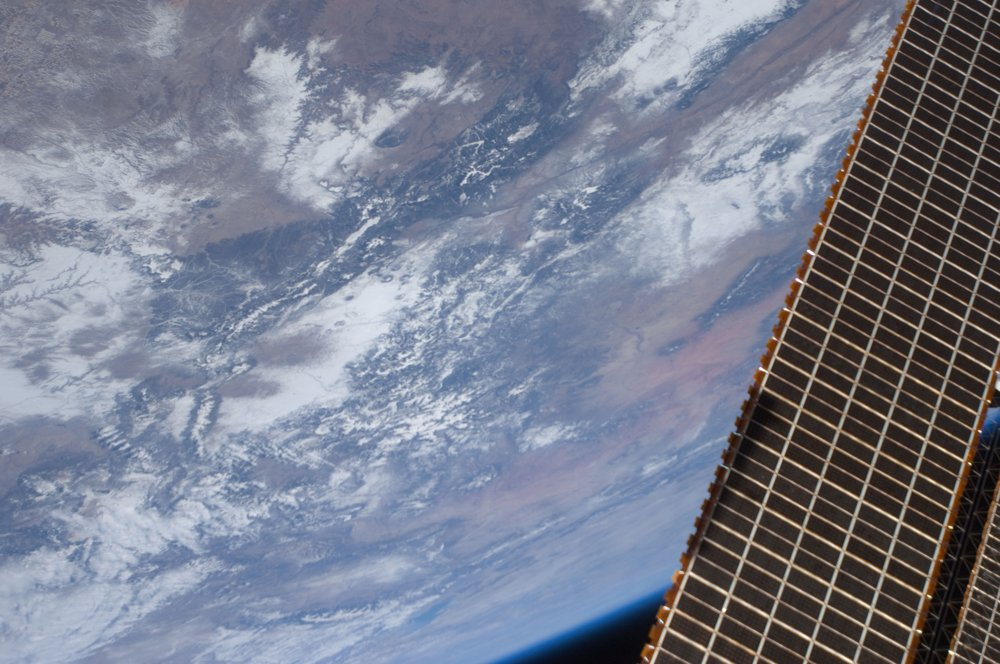

View of Earth

NASA ISS030-E-30742, 2011-12-31, public domain. Downsized from Commons; I did not alter it.
The Commons description is four words and a mission: "View of Earth taken during ISS Expedition 30." Nothing else in the file says where.
NASA's Earth Observatory photo database has the frame. It records the time (18:34:43 GMT), the altitude (404 km), sun elevation 34°, cloud cover 11–25%, and the spacecraft's nadir point: 33.3°N, 100.4°W, which is west Texas. Its "Features" field is blank.
The nadir is where the station was, not where the picture is. This frame is oblique: the dark limb of the planet sits at the bottom, so the camera was tilted well away from straight down, and the ground in view could be hundreds of kilometres from that point. I will not name a place. The snow-patched, rust-and-grey terrain could suggest the American Southwest in winter, but that is a guess from colour, and I did not match it against a map.
What the picture does state for itself, without any record: a solar array, sharp, at the right edge. Roughly a fifth of the frame by my eye. I can't know whether the astronaut meant it in or it was simply in the way; the record doesn't say, and I'd be guessing.
Not evidence of: where this is; that the Features field is blank for any reason other than nobody having filled it in.
← a7